Chamber of Reflection, Vol. I
- Artist's book, 15 × 18 cm
- Digital print on paper and tracing paper
Chamber of Reflection is the first in a series of travel diaries and was born from the desire to explore a place not only as a destination, but as a space traversed by its own political, social and historical relevance. The project questions what it means to travel today and how truly aware we are of the contexts we experience, often observed through a tourist perspective that tends to isolate personal experience from the dynamics that characterize them.
The book is divided into two chapters dedicated to two different places: New York City, United States, and Novoselitsa, Ukraine, cities belonging to two countries that, albeit in different ways, find themselves involved in a state of war.
How do the news we learn settle in our daily lives? How do bombings, political decisions, environmental disasters, and conflicts coexist with the most ordinary gestures of everyday life?
Chamber of Reflection intertwines two parallel dimensions: the intimate and subjective one of the travel experience and the mediated one of current events, constructed through the continuous flow of news. In an effort to stay afloat in this overabundance of information, the work reflects on the privilege of distance from conflict and how events are inevitably filtered through individual experience.
Each event crosses my gaze, is reinterpreted and subjectively assimilated: the diary thus becomes a space in which personal experience and shared reality coexist, questioning the way we look at, remember, and inhabit places.
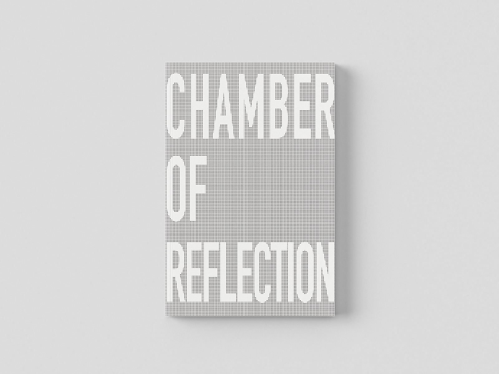
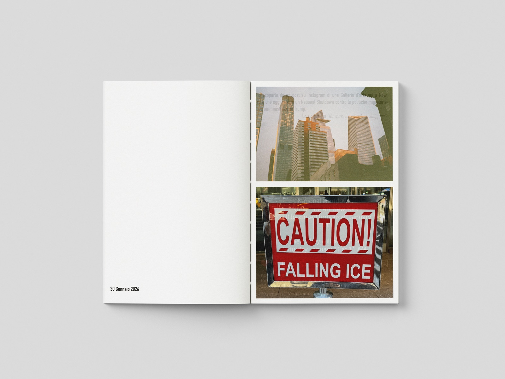
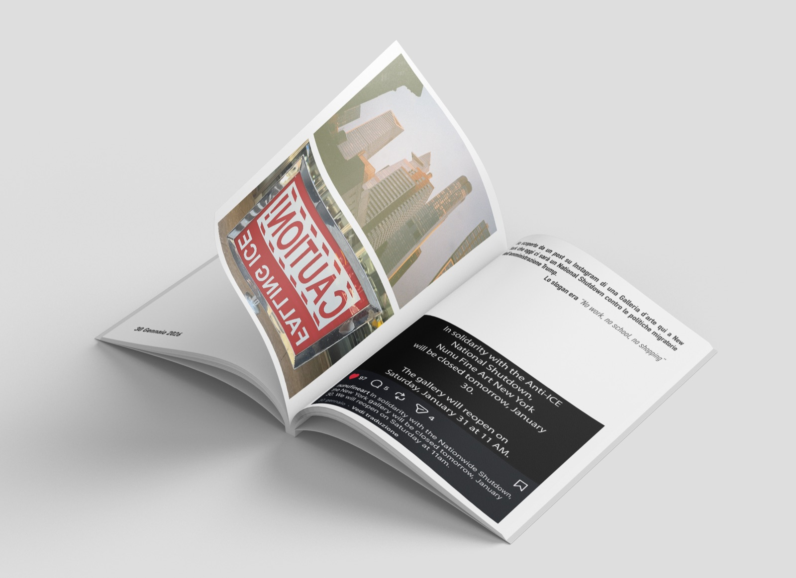
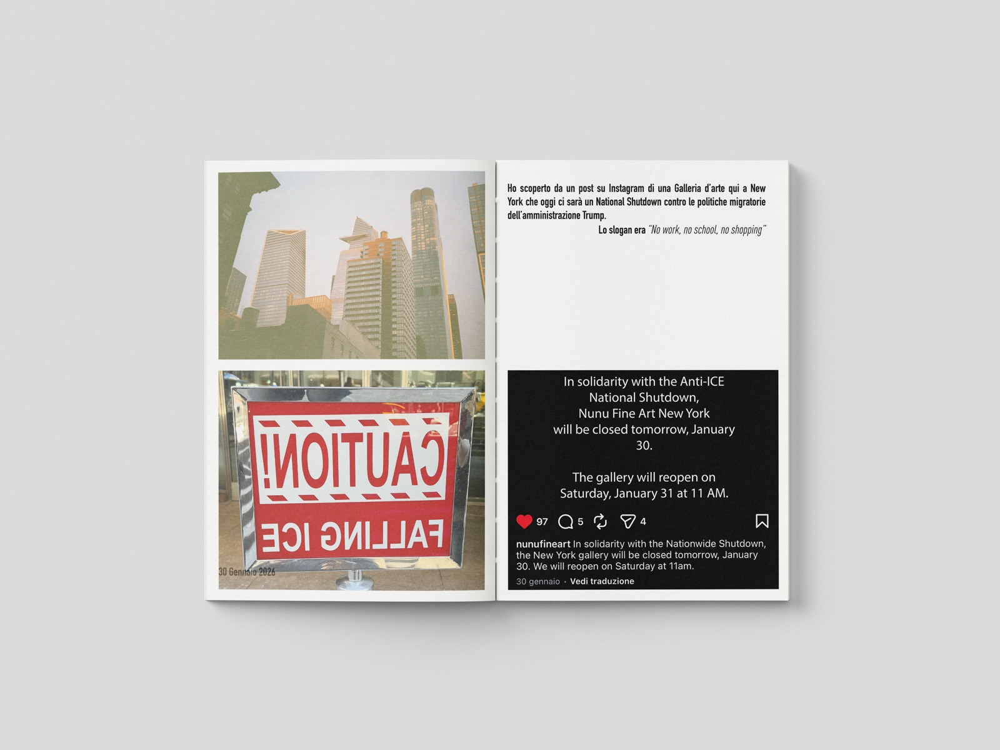
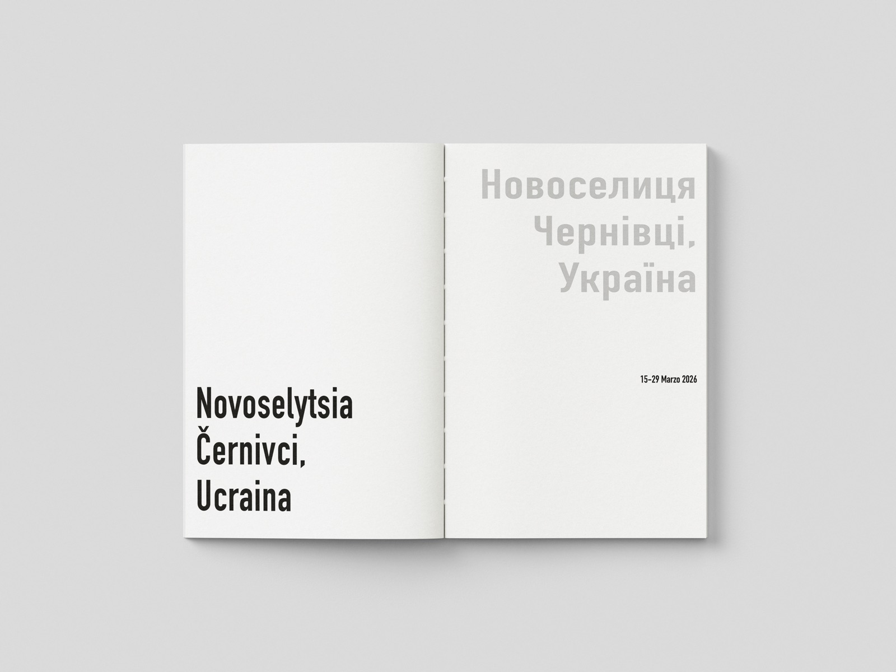
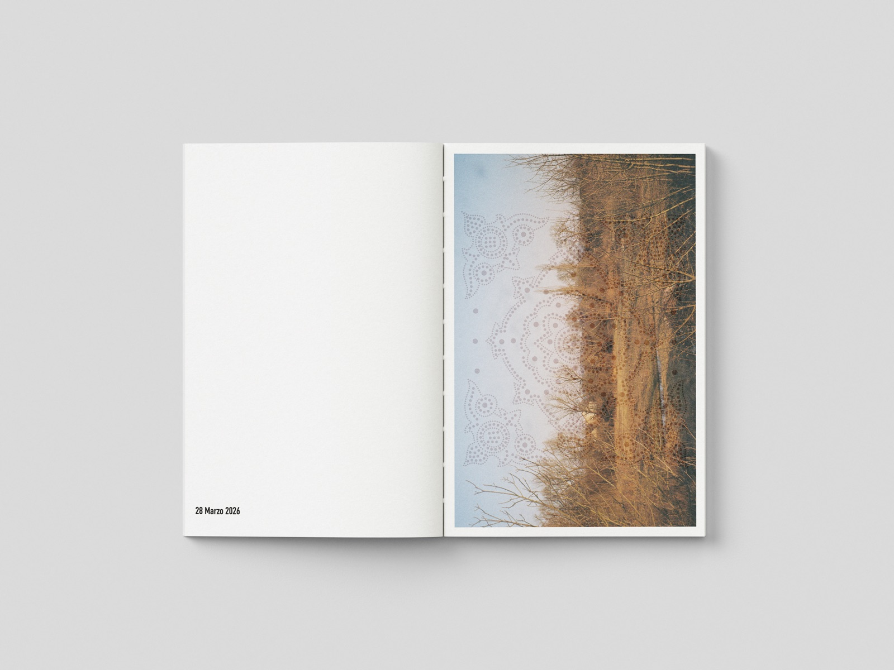
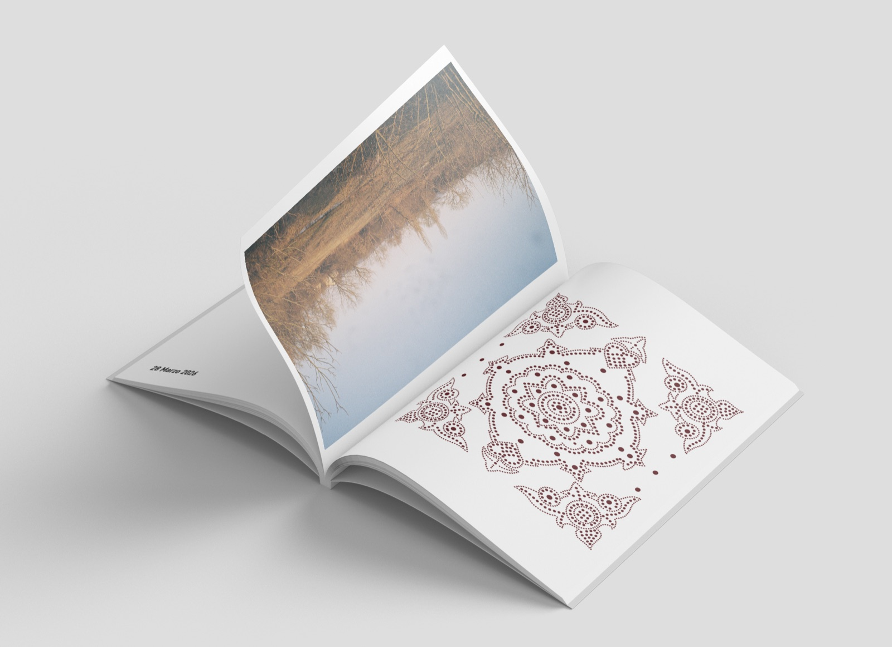
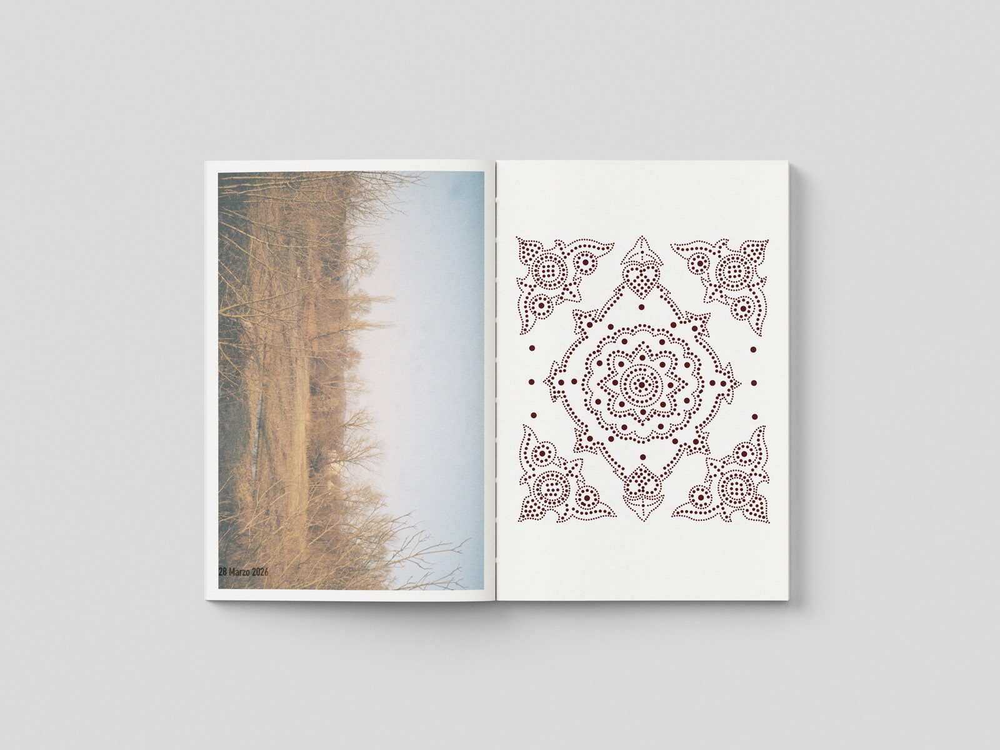
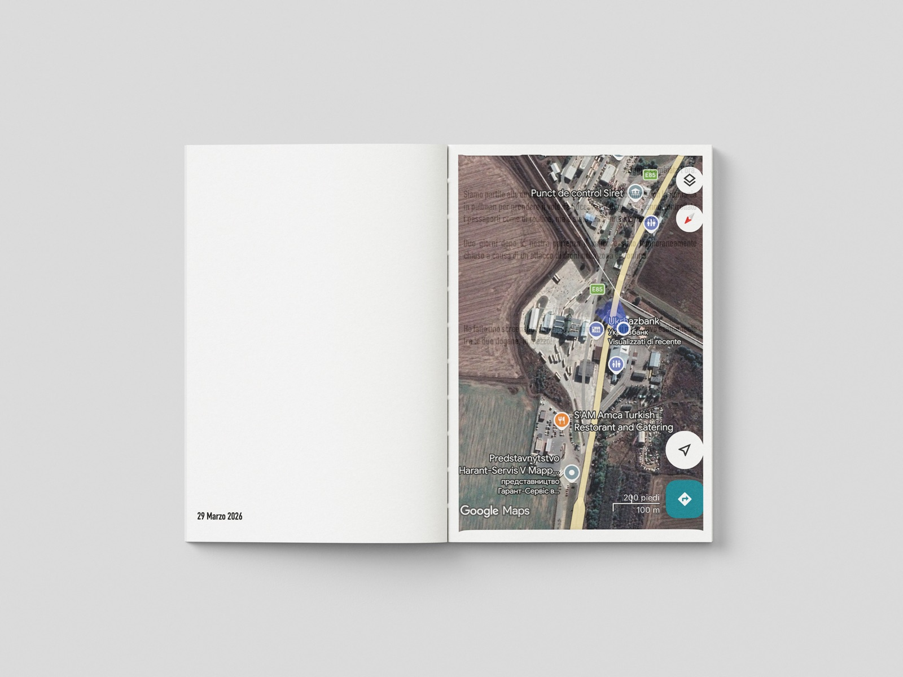
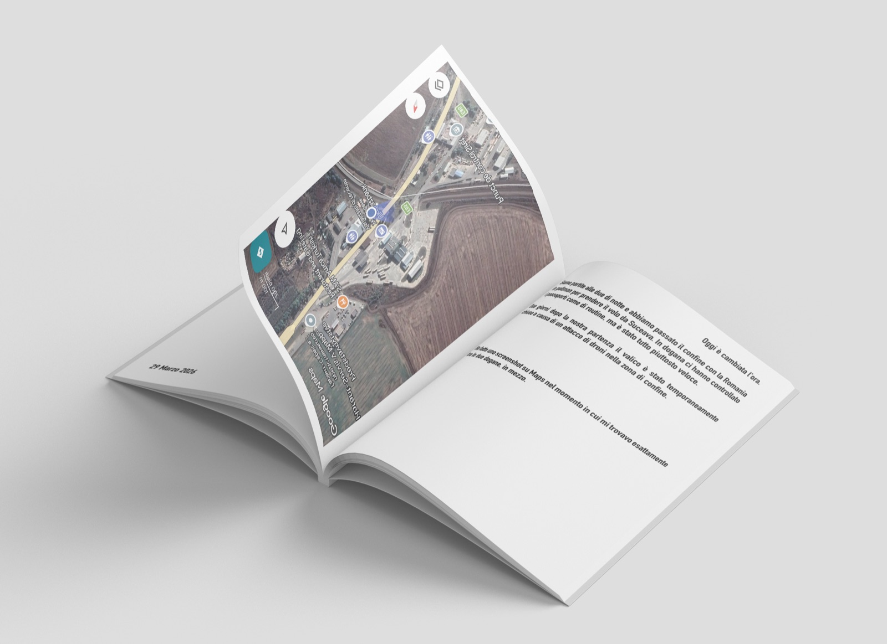
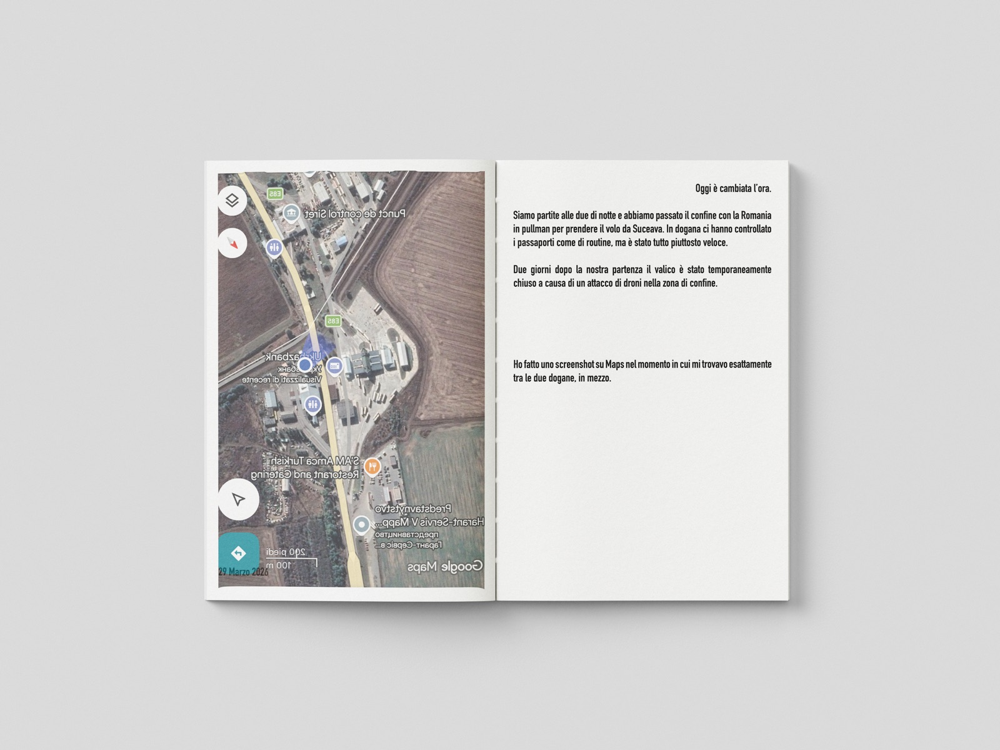
Exhibited at Tumbleweed - quando le mappe non creano imperi (2026), Società Umanitaria, Milano.